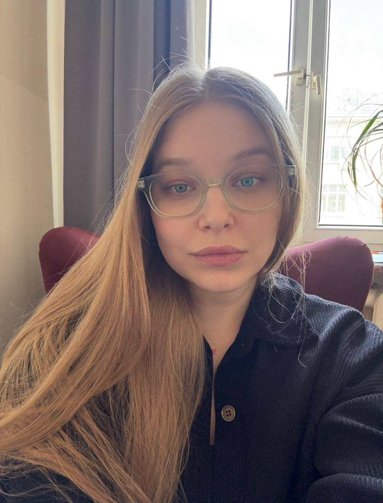
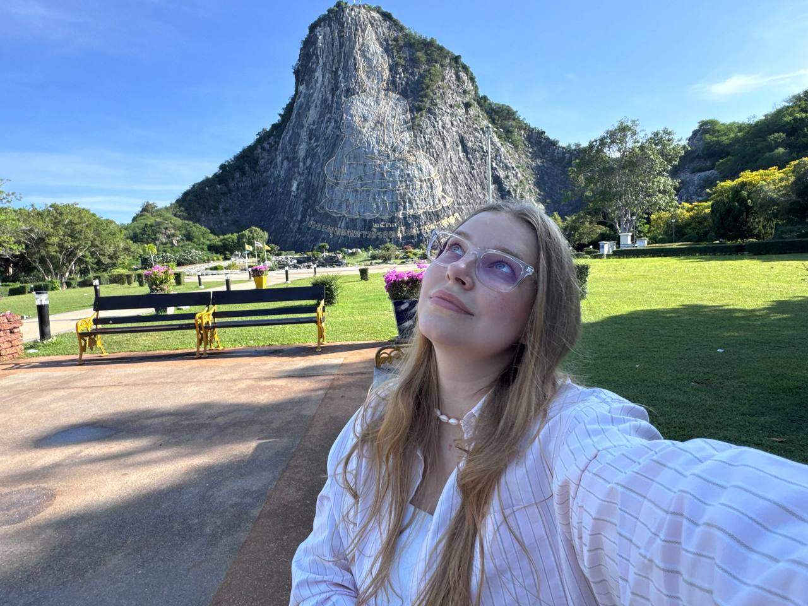

Апатия и депрессия
- Недостаток мотивации, прокрастинация
- Выгорание
- Сниженное настроение, потеря интереса к жизни
- Депрессивные расстройства
- Потеря желания жить, суицидальные мысли
- Кризисные состояния
Помогаю справляться с тревогой, апатией и сложными чувствами. Бережно, без осуждения, с опорой на доказательные методы — КПТ и АСТ.

Если вы не нашли свой запрос в списке — напишите мне. Обсудим, чем я могу помочь, или сформулируем запрос вместе.
Современные направления психотерапии с доказанной эффективностью.
«Нас ранят не сами события, а то, как мы их себе объясняем».
Внутренний комментарий — быстрый, почти незаметный — рождает тяжёлые чувства и толкает нас в сторону избегания. «Я опять всё испортил». «Они подумали, что я глупый». «Всё равно ничего не выйдет».
Мысли бегут автоматически, а следом бегут эмоции и поступки. На сессиях мы учимся замечать этот внутренний шум, проверять мысли на соответствие реальности и пробовать новые способы действовать и принимать решения.
О том, как перестать воевать с самим собой и начать жить так, как на самом деле хочется.
Терапия — знакомство с собой настоящим. С тревогой, которая никуда не уходит. С грустью, которая приходит без приглашения. Со страхом, который шепчет под руку.
Мы смотрим, какие переживания затягивают вас сильнее всего, и ищем способы не тонуть в них. Не выкинуть, не подавить, не убежать — научиться быть рядом с ними так, чтобы они перестали управлять вашими решениями. И маленькими шагами двигаться в сторону той жизни, которую вы хотите.
Терапия — это не только встреча раз в неделю. Большая часть изменений случается не в кабинете, а в обычной жизни: когда вы замечаете мысль, которая раньше проходила мимо; когда выбираете сделать иначе, хотя привычка тянет по-старому; когда пробуете то, что раньше казалось слишком страшным.
Поэтому между встречами вас ждут небольшие задания-эксперименты, которые помогают закрепить новые навыки и набрать свежий опыт. Это может быть что-то совсем простое: понаблюдать за собой в определённой ситуации, попробовать новую реакцию, записать пару мыслей в моменте. А может — чуть посложнее, если вы готовы.
На следующей сессии мы вместе смотрим, что получилось, что не пошло и почему. Иногда именно «не получилось» показывает, где спрятано самое важное.

Клинический психолог, КПТ и АСТ-терапевт. Работаю с людьми, которым тяжело: с тревогой, апатией, сложными чувствами и запутанными отношениями с собой.
Мой подход — соединять научно обоснованные методы с живым, человеческим контактом. Без универсальных рецептов и без «правильных» ответов. Мы будем искать ваш путь — вместе.
Я сама регулярно нахожусь в личной терапии последние 6 лет. Для меня это часть профессии — невозможно быть рядом с чужими переживаниями и оставаться при этом закрытым для своих.
Личная терапия помогает мне лучше понимать, где заканчивается клиент и начинаюсь я, замечать собственные слепые пятна и не приносить их в работу.
Помимо этого я постоянно участвую в супервизиях и интервизиях — разбор случаев с более опытными коллегами. Там я смотрю на работу со стороны, получаю свежий взгляд и убеждаюсь, что двигаюсь в верном направлении.
Всё, что вы приносите на сессии, остаётся между нами. Я не оцениваю и не делю поступки на «правильные» и «стыдные». Что бы вы ни рассказали — я не отвернусь и не стану смотреть на вас иначе. Я на вашей стороне, даже когда мы разбираем что-то непростое.
Без живого контакта терапия невозможна. Поэтому я стараюсь создать пространство, где можно быть собой: злиться, плакать, смеяться, материться, говорить как есть.
За каждым запросом стоит живой человек, а не строчка в списке. Мне важно вникать в вашу ситуацию — в контекст, историю, в то, как именно устроена ваша жизнь. Универсальных рецептов у меня нет: то, что помогло одному, может не подойти другому.
50-минутная встреча в Zoom. Тишина, стабильный интернет — и мы работаем.
Мы с вами познакомимся: я расскажу о себе как о специалисте, а вы — о себе в свободном формате (можно через вопросы, если так комфортнее).
Обсудим ваш запрос, конкретизируем его (если он есть) или начнём формулировать, расставим приоритеты работы.
Обсудим план будущей работы.
Вы сможете понаблюдать, комфортно ли вам со мной, понять, подхожу ли я вам, задать любые вопросы.
Вам понадобится тихое и уединённое место, где вы будете чувствовать себя в безопасности (кофейня не подойдёт), и стабильный интернет.
Могут пригодиться вода, блокнот или заметки для записей и слёзные платочки.
Напишите мне — обсудим, чем я могу помочь, или сформулируем запрос вместе.
Всё, что происходит на наших встречах, остаётся между нами. Я не рассказываю третьим лицам ни о содержании сессий, ни о самом факте того, что вы ко мне ходите.
Есть два исключения, о которых честно предупреждаю заранее. Первое — супервизия: разбор случаев с более опытными коллегами, который нужен мне для качества работы. Ваша личность при этом не раскрывается. Второе — ситуации, когда есть реальная угроза жизни или здоровью — вашей или чужой.
Вы можете свободно рассказывать близким о том, что происходит на сессиях, — это ваш опыт и ваша терапия.
Аудио- и видеосъёмка сессии возможна только с моего согласия. Это правило работает в обе стороны: я тоже не записываю наши встречи.
Всё, что мы делаем в терапии, происходит только по вашему согласию. Мы не будем касаться тем, к которым вы пока не готовы, не будем пробовать техники, которые вызывают у вас внутреннее «нет».
Если что-то пугает или кажется преждевременным — вы всегда можете сказать «стоп», «не сейчас» или «давайте иначе».
Я работаю по полной предоплате. Это помогает нам обоим чувствовать определённость: место в расписании закреплено за вами, а я могу спокойно планировать своё время.
Если вам нужны чеки — сообщите мне, пожалуйста, об этом.
Перенести или отменить сессию можно не позднее, чем за сутки до её начала. В этом случае мы просто выберем другое удобное время, и оплата перенесётся на новую дату.
Если предупредить позже — сессия оплачивается полностью.
Если что-то пойдёт не так с интернетом, электричеством или связью — сессия полностью или частично переносится на другое удобное время или день.
Если вы приходите в состоянии алкогольного или наркотического опьянения, сессия отменяется, но оплачивается полностью. В таком состоянии человек не может полноценно быть в контакте с собой и со мной, а работа с чувствами может оказаться небезопасной.
Если вы почувствуете, что хотите сделать перерыв или вовсе закончить терапию — это нормально. Иногда так бывает: запрос решён, стало легче, изменились обстоятельства.
Будет здорово, если вы придёте на завершающую сессию. Это возможность вместе посмотреть на пройденный путь, подвести итоги, сказать друг другу то, что осталось недосказанным.
Оставьте заявку — я свяжусь с вами, чтобы подобрать удобное время для встречи. Или напишите в Telegram.